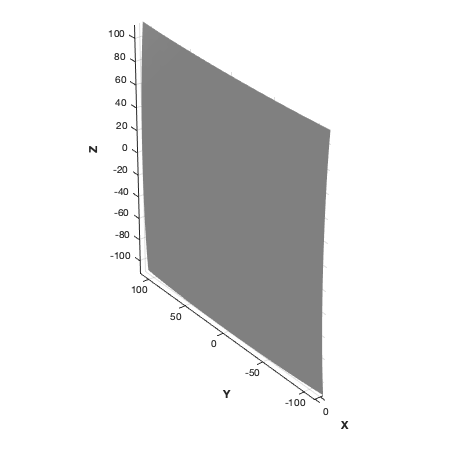
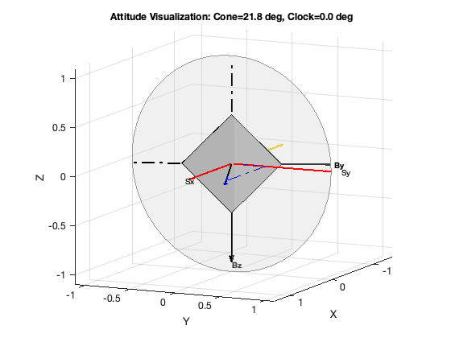
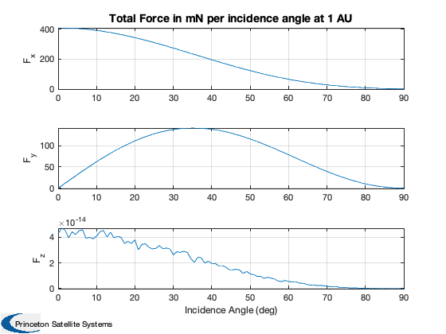
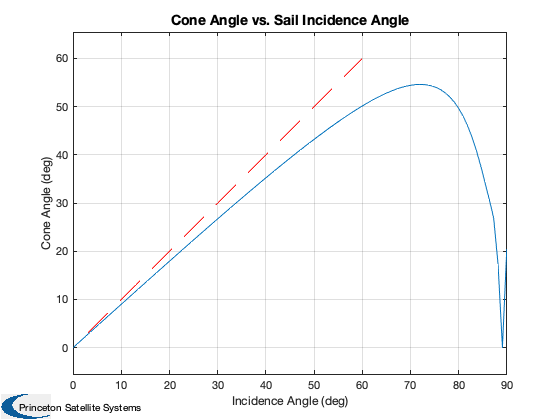

Compute sail force over incidence angle.
Uses SteeringAnglesToQ to compute the quaternion for the model for the given set of incidence angles, then uses the full disturbance model in SaiDisturbance to compute the force and torque. The true cone angle can then be post-computed from the force vector.
------------------------------------------------------------------------ See also DrawSCPlanPlugIn, Cone, Constant, Plot2D, Unit, JD2000, El2RV, QSail, SteeringAnglesToQ, UToConeClock, DisturbanceStruct, EnvironmentStruct, SailDisturbance, SailEnvironment ------------------------------------------------------------------------
Contents
%------------------------------------------------------------------------------- % Copyright (c) 2005,2006,2010 Princeton Satellite Systems, Inc. % All rights reserved. % Since version 9. %------------------------------------------------------------------------------- clear SailDisturbance
Load the sail models
%--------------------- g = load('BillowedSquareSail.mat'); DrawSCPlanPlugIn('initialize',g); % more models
Create the profile
%------------------- % Single orbit location at 1 AU %------------------------------ aU = Constant('au'); mu = Constant('mu sun'); p = []; [p.r, p.v] = El2RV([aU,0,0,0,0,0], [], mu ); p.jD = JD2000*ones(1,100); % Heliocentric sun vector: just -rHat %------------------------------------- s = -Unit(p.r); % Quaternion for range of incidence angles %----------------------------------------- incidence = linspace(0,pi/2); clock = 0; qSail = QSail( s, [], p.v, -1 ); for k = 1:length(incidence) p.q(:,k) = SteeringAnglesToQ( incidence(k), clock, qSail, [], [], -1 ); end SteeringAnglesToQ( incidence(25), clock, qSail, [], [], -1 )
incidence =
0.3808
clock =
0
These angles should match:
cone2 =
0.3808
clock2 =
3.059e-16
ans =
6.0126e-17
0.18925
-0.98193
1.1588e-17
 Create the data structure
%-------------------------- % Get default structure for disturbances and environment %------------------------------------------------------- d = DisturbanceStruct; d = EnvironmentStruct( d ); % Turn on aerodynamics %--------------------- d.aeroOn = 0.0; % Turn off albedo %---------------- d.albedoOn = 0.0; % Turn on solar %-------------- d.solarOn = 1.0; % Turn off magnetic torques %-------------------------- d.magOn = 0.0; % Turn off (planetary) radiation %------------------------------- d.radOn = 0.0; % Turn off gravity gradient %-------------------------- d.ggOn = 0.0; % Orbiting the sun %----------------- d.planet = 'Sun';
Compute the disturbances. It will automatically plot the results.
The inputs are ( cad model, profile structure, environment data, function control structure )
%----------------------------------------------------------------------------
e = SailEnvironment( d.planet, p, d );
[f,t] = SailDisturbance( g, p, e, d );
Create plots
%-------------- Plot2D(incidence*180/pi,f.total*1e3,'Incidence Angle (deg)',{'F_x','F_y','F_z'},... 'Total Force in mN per incidence angle at 1 AU') fHat = Unit(f.total); [cone,clock] = UToConeClock( fHat, qSail ); Plot2D(incidence*180/pi,cone*180/pi,'Incidence Angle (deg)','Cone Angle (deg)',... 'Cone Angle vs. Sail Incidence Angle') axis equal hold on plot(1:60,1:60,'r--') %-------------------------------------- % PSS internal file version information %-------------------------------------- 